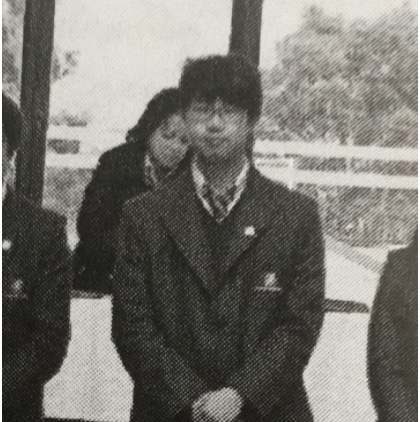

Bringing people into the spotlight: Interview with Juno Kim
What do you want to be, and what kind of person do you want to be? A better person, a brave person, or a person with leadership? While everyone has unique personalities that we can learn from,we do not have many chances to explore other people’s characteristics and their thoughts. For example, we do not know much about how others think about their lives, how they view the world, or how they consider their future. High school students wonder about their lives and care for their future as they grow. To understand further perspectives of other students, I interviewed Juno Kim, a freshman at Seoul Scholars International.
1. What is your dream job?
My dream job is to be a robotic engineer. I would like to build and program robots and put them into practical uses in daily life. The field of robotic engineering is the only career field that I am interested in.
2. Is there a motto that you follow in your life?
I don't really have a specific motto but if I were to choose one, I would choose "Never let others suffer from your irresponsibility or ignorance; use all your chance to help out someone".
3. Do you prefer online classes or offline?
Due to convenience, I think online is better,but if I consider the amount of things I learn, I prefer offline classes.
4. What do you do in your free time?
I usually play videogames or listen to music when I have free time, but from time to time, I also do academic research and read books.
5. What makes you unique?
I think my perspective differentiates me from others. 90% of my personality was formed in Colombia (Latin America), so it is hard for me to follow Korean cultures and act like a stereotypical Korean boy. But I think this is more of an advantage than a disadvantage because now I can look at others from two perspectives. I also possess a sense of humor, which is very different from others in South Korea.
There are many ways of viewing the world and understanding people. Everyone has different thoughts, and I do not think having different opinions or a unique personality is always a bad thing. At the end of the day, all students are valuable and should be respected in their own ways.
By. Sungju Park
Date: 2021.5.31